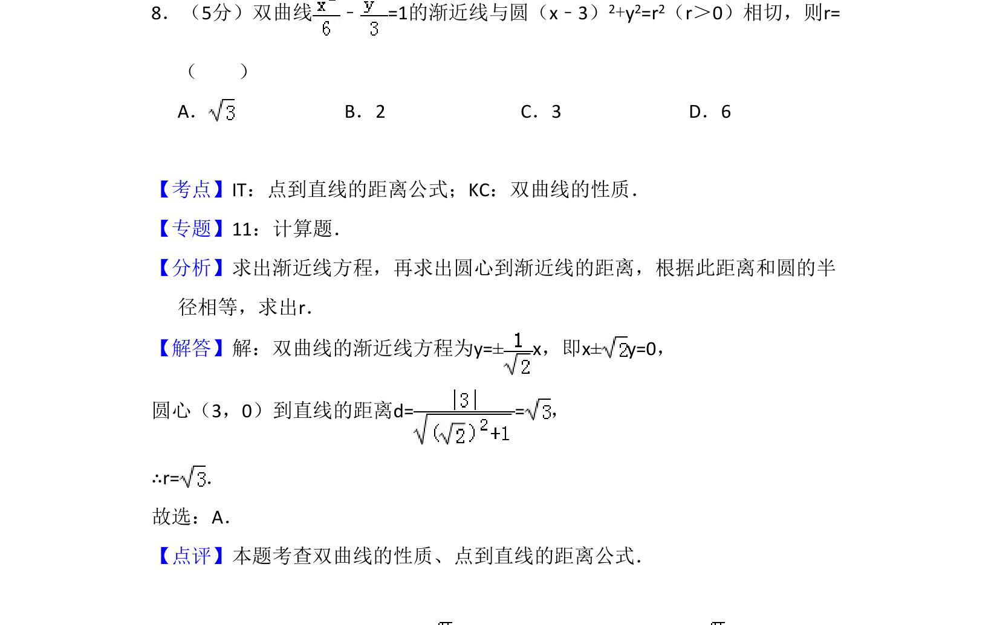
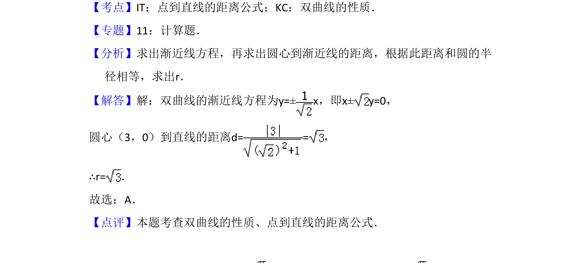

考点：双曲线性质 点到直线距离公式

此题考查双曲线的渐近线方程及与圆相切时半径的求解，利用点到直线距离等于半径。

📄 原 PDF 第 5 页：
素材/真题/吉林/2008-2024·（吉林）数学高考真题/2009年高考数学试卷（文）（全国卷Ⅱ）（解析卷）.pdf
8．（5分）双曲线 ﹣=1的渐近线与圆（x﹣3） 2+y2=r2（r＞0）相切，则r= （ ） A．B．2 C．3 D．6
【考点】IT：点到直线的距离公式；KC：双曲线的性质．菁优网版权所有 【专题】11：计算题． 【分析】求出渐近线方程，再求出圆心到渐近线的距离，根据此距离和圆的半 径相等，求出r． 【解答】解：双曲线的渐近线方程为y=±x，即x±y=0， 圆心（3，0）到直线的距离d= =， ∴r=． 故选：A． 【点评】本题考查双曲线的性质、点到直线的距离公式．